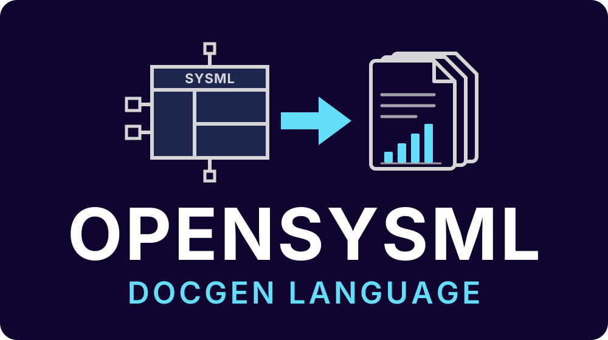
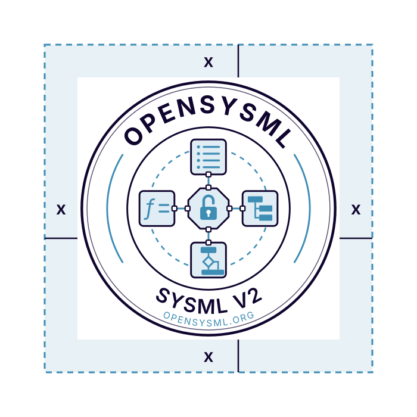

OpenSysML brand
OpenSysML brand guidelines
How to use the OpenSysML badge and DocGen Language lockup for opensysml.org and its projects. It follows the OpenMBEE brand guidelines: same palette and typeface.
Badge and lockup
The badge is the primary OpenSysML mark: four views of a model (requirements, functions, structure and behaviour) around an open hub, with the project name and opensysml.org. The DocGen Language lockup is used where the language itself is the subject. Each comes in a version for dark backgrounds and one for light backgrounds.
OpenSysML badge
DocGen Language lockup


Clear space and minimum size
Keep a margin of at least x around the badge, where x is one eighth of the badge width. Keep other logos, text and page edges outside it.

x = 1/8 of the badge width
- Minimum badge size: 96 px on screen, 25 mm in print. Below that the small text stops being legible; use the OpenMBEE icon or plain text instead.
- Minimum DocGen lockup width: 200 px on screen, 50 mm in print.
- Always scale proportionally.
Colours
The three OpenMBEE primary colours, plus one accent for light backgrounds, where the light blue is too pale to read.
Dk Blue
- HEX
- #10052F
- RGB
- 16 / 5 / 47
- Use
- Backgrounds, text on light
Lt Blue
- HEX
- #64DDFA
- RGB
- 100 / 221 / 250
- Use
- Accents on dark backgrounds
Grey
- HEX
- #D6D6D6
- RGB
- 214 / 214 / 214
- Use
- Rings, text on dark
Accent (light)
- HEX
- #3E8DB5
- RGB
- 62 / 141 / 181
- Use
- Accent on white or light backgrounds
/* OpenSysML brand colours */
:root {
--opensysml-dark-blue: #10052F;
--opensysml-light-blue: #64DDFA;
--opensysml-grey: #D6D6D6;
--opensysml-accent: #3E8DB5; /* light backgrounds only */
}Typography
Use ABeeZee Regular, the OpenMBEE typeface, for headings and body text. The lettering inside the badge and lockup is already converted to outlines, so it needs no font.
OPENSYSML
DOCGEN LANGUAGE
SysML v2 · opensysml.org
Download ABeeZee from Google Fonts (open source, SIL Open Font License)
Usage
Do
- Use the dark version on dark or photographic backgrounds with enough contrast, and the light version on white or pale backgrounds.
- Link the badge to opensysml.org where it appears on the web.
- Write the name as OpenSysML in running text.
Don’t
- Recolour, stretch, rotate or add shadows or effects.
- Redraw the badge or change its text.
- Put the light version on a dark background, or the dark version on a pale one.
- Imply endorsement by OpenSysML or OpenMBEE without permission.
SysML marks
The SysML® name and the SysML v2 logo belong to the Object Management Group (OMG) and are not covered by the OpenSysML or OpenMBEE licenses. The badge uses the words “SysML v2” only to name the language OpenSysML implements. Follow OMG’s guidance before using its logo. See Licenses.
Downloads
SVG files are vector and scale to any size. PNG files are 1400 px wide; the dark badge and lockup have a navy background built in.


Download all OpenSysML files (ZIP)
These guidelines extend the OpenMBEE brand guidelines, designed by Robert Sheppard Design Limited. The OpenSysML artwork was drawn for this site in the same palette.